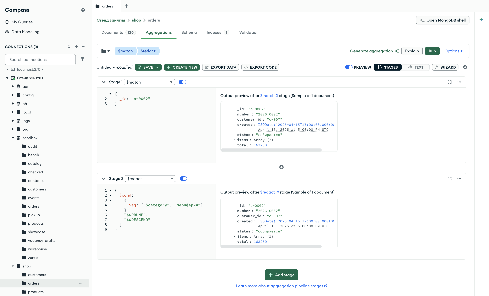

Справочник по MongoDB · модуль 4 · конвейер агрегации
4.9
$replaceRoot, $replaceWith
и $redact
В этой главе разобраны стадии, которые меняют документ целиком. $replaceRoot и $replaceWith ставят на место документа другой документ — вложенный или собранный выражением $mergeObjects. $redact проходит по документу уровень за уровнем и по условию удаляет вложенные документы. Отдельно разобрана ошибка, при которой $redact удаляет больше, чем ожидалось.
- Категория
- Агрегация
- Уровень
- Начальный
- Связанные темы
- $unwind (глава 4.6), $project (глава 4.2), $group (глава 4.4), $cond (глава 4.2), вложенные документы и точечная нотация (глава 2.1)
- Зачем это знать
- Работать с вложенным документом как с отдельным, собирать документ ответа из частей и убирать из документа вложенные части по условию
Как запускать примеры этой главы
mongodb-glava-4.9-python.zip, 64 КБmongodb-glava-4.9-ruby.zip, 63 КБmongodb-glava-4.9-go.zip, 70 КБmongodb-glava-4.9-cpp.zip, 70 КБ — все примеры главы готовыми программами, базы и стенд в Docker. В README.md — запуск в Docker, если Compass нет или он не подключается, и на установленном сервере с Compass, а также что должна напечатать каждая программа.lessons/ch4_9.py — пример вставляется в конец файлаlessons/ch4_9.rb — пример вставляется в конец файлаlessons/ch4_9.go — пример внутрь скобок в конце main, функции и типы — выше mainlessons/ch4_9.cpp — пример внутрь скобок в конце main, функции — выше maincd lessons, затем python ch4_9.pycd lessons, затем python3 ch4_9.py · в Docker: docker compose run --rm python lessons/ch4_9.pycd lessons, затем ruby ch4_9.rb · в Docker: docker compose run --rm ruby lessons/ch4_9.rbcd lessons, затем go run ch4_9.go · в Docker: docker compose run --rm go lessons/ch4_9.gocd lessons, затем g++ -std=c++17 ch4_9.cpp -o prog $(pkg-config --cflags --libs libmongocxx1) && ./prog · в Docker: docker compose run --rm cpp lessons/ch4_9.cpp§1Стадия $replaceRoot
В папке заказа лежат несколько бланков: состав заказа, оплата, доставка. Курьерской службе отдают только бланк доставки — город, способ, срок. Работа службы дальше идёт с этим бланком, без остальной папки.
В заказе магазина бланк доставки — вложенный документ delivery с полями city, type и days. Стадия $replaceRoot заменяет каждый документ потока другим документом. Параметр newRoot задаёт новый документ, например путь к вложенному: {"$replaceRoot": {"newRoot": "$delivery"}}. Корень — сам документ верхнего уровня; после стадии корнем становится delivery.
Пример отбирает заказ 2026-0002 и заменяет его документом доставки.
У стадии $replaceRoot в mongocxx::pipeline есть свой метод — replace_root, параметр — документ с полем newRoot.
pipeline = [
{"$match": {"_id": "o-0002"}},
{"$replaceRoot": {"newRoot": "$delivery"}},
]
for doc in orders.aggregate(pipeline):
print(doc)
mongocxx::pipeline pipeline; pipeline.match(make_document(kvp("_id", "o-0002"))); pipeline.replace_root(make_document(kvp("newRoot", "$delivery"))); for (auto&& doc : orders.aggregate(pipeline)) { std::cout << bsoncxx::to_json(doc, bsoncxx::ExtendedJsonMode::k_relaxed) << std::endl; }
pipeline := mongo.Pipeline{
{{Key: "$match", Value: bson.D{{Key: "_id", Value: "o-0002"}}}},
{{Key: "$replaceRoot", Value: bson.D{{Key: "newRoot", Value: "$delivery"}}}},
}
cursor, _ := orders.Aggregate(ctx, pipeline)
for cursor.Next(ctx) {
var doc bson.D
cursor.Decode(&doc)
out, _ := bson.MarshalExtJSON(doc, false, false)
fmt.Println(string(out))
}
pipeline = [
{ "$match" => { "_id" => "o-0002" } },
{ "$replaceRoot" => { "newRoot" => "$delivery" } },
]
orders.aggregate(pipeline).each { |doc| puts doc.inspect }
{'city': 'Новосибирск', 'type': 'курьер', 'days': 4}
{ "city" : "Новосибирск", "type" : "курьер", "days" : 4 }
{"city":"Новосибирск","type":"курьер","days":4}
{"city"=>"Новосибирск", "type"=>"курьер", "days"=>4}
В выходном документе три поля доставки. Остальных полей заказа нет, даже _id: его нет и во вложенном документе. На схеме — заказ до стадии и документ после неё.
Цветом отмечен вложенный документ, который стал документом потока. Поля заказа вне delivery на выходе стадии не остаются.
По документу доставки нельзя понять, к какому заказу он относится. Чтобы сохранить номер, новый документ собирают из нескольких частей.
§2$replaceWith и $mergeObjects
На бланк доставки, который уходит курьерам, дописывают номер заказа. Бланк остаётся бланком доставки, но теперь его можно связать с заказом.
Стадия $replaceWith — короткая запись $replaceRoot: новый документ записывается сразу, без newRoot. {"$replaceWith": "$delivery"} делает то же, что пример §1. Выражение $mergeObjects сливает несколько документов в один: поля берутся из всех документов списка, слева направо. Если поле повторяется, остаётся значение из документа правее.
Пример собирает новый документ из номера заказа и документа доставки.
pipeline = [
{"$match": {"_id": "o-0002"}},
{"$replaceWith": {"$mergeObjects": [{"number": "$number"}, "$delivery"]}},
]
for doc in orders.aggregate(pipeline):
print(doc)
mongocxx::pipeline pipeline; pipeline.match(make_document(kvp("_id", "o-0002"))); pipeline.append_stage(make_document(kvp("$replaceWith", make_document( kvp("$mergeObjects", make_array(make_document(kvp("number", "$number")), "$delivery")))))); for (auto&& doc : orders.aggregate(pipeline)) { std::cout << bsoncxx::to_json(doc, bsoncxx::ExtendedJsonMode::k_relaxed) << std::endl; }
pipeline := mongo.Pipeline{
{{Key: "$match", Value: bson.D{{Key: "_id", Value: "o-0002"}}}},
{{Key: "$replaceWith", Value: bson.D{
{Key: "$mergeObjects", Value: bson.A{bson.D{{Key: "number", Value: "$number"}}, "$delivery"}}}}},
}
cursor, _ := orders.Aggregate(ctx, pipeline)
for cursor.Next(ctx) {
var doc bson.D
cursor.Decode(&doc)
out, _ := bson.MarshalExtJSON(doc, false, false)
fmt.Println(string(out))
}
pipeline = [
{ "$match" => { "_id" => "o-0002" } },
{ "$replaceWith" => { "$mergeObjects" => [{ "number" => "$number" }, "$delivery"] } },
]
orders.aggregate(pipeline).each { |doc| puts doc.inspect }
{'number': '2026-0002', 'city': 'Новосибирск', 'type': 'курьер', 'days': 4}
{ "number" : "2026-0002", "city" : "Новосибирск", "type" : "курьер", "days" : 4 }
{"number":"2026-0002","city":"Новосибирск","type":"курьер","days":4}
{"number"=>"2026-0002", "city"=>"Новосибирск", "type"=>"курьер", "days"=>4}
В документе четыре поля: number из первого документа списка и три поля доставки из второго. Поля идут в порядке документов списка. На схеме — из чего собран результат.
| Документ списка | Поля | В результате |
|---|---|---|
{"number": "$number"} | number: 2026-0002 | number |
"$delivery" | city: Новосибирск, type: курьер, days: 4 | city, type, days |
| результат | { number, city, type, days } | |
Документ {"number": "$number"} записан в выражении: значение поля берётся из заказа путём "$number", как в $project (глава 4.2).
После замены документ потока — новый документ. Все следующие стадии видят только его поля.
§3Стадии после замены документа
Служба доставки считает свои бланки: сколько отправлено почтой, сколько в пункты выдачи, и средний срок. Для этого ей хватает бланков, папки заказов не нужны.
Пример отбирает 13 заказов в пути, заменяет каждый документом доставки и группирует их по способу доставки. В $group пути записаны без delivery.: "$type" и "$days", потому что поля доставки теперь лежат на верхнем уровне.
pipeline = [
{"$match": {"status": "в пути"}},
{"$replaceWith": "$delivery"},
{"$group": {"_id": "$type", "orders": {"$sum": 1}, "days": {"$avg": "$days"}}},
{"$sort": {"_id": 1}},
]
for doc in orders.aggregate(pipeline):
print(doc)
mongocxx::pipeline pipeline; pipeline.match(make_document(kvp("status", "в пути"))); pipeline.append_stage(make_document(kvp("$replaceWith", "$delivery"))); pipeline.group(make_document( kvp("_id", "$type"), kvp("orders", make_document(kvp("$sum", 1))), kvp("days", make_document(kvp("$avg", "$days"))))); pipeline.sort(make_document(kvp("_id", 1))); for (auto&& doc : orders.aggregate(pipeline)) { std::cout << bsoncxx::to_json(doc, bsoncxx::ExtendedJsonMode::k_relaxed) << std::endl; }
pipeline := mongo.Pipeline{
{{Key: "$match", Value: bson.D{{Key: "status", Value: "в пути"}}}},
{{Key: "$replaceWith", Value: "$delivery"}},
{{Key: "$group", Value: bson.D{
{Key: "_id", Value: "$type"},
{Key: "orders", Value: bson.D{{Key: "$sum", Value: 1}}},
{Key: "days", Value: bson.D{{Key: "$avg", Value: "$days"}}}}}},
{{Key: "$sort", Value: bson.D{{Key: "_id", Value: 1}}}},
}
cursor, _ := orders.Aggregate(ctx, pipeline)
for cursor.Next(ctx) {
var doc bson.D
cursor.Decode(&doc)
out, _ := bson.MarshalExtJSON(doc, false, false)
fmt.Println(string(out))
}
pipeline = [
{ "$match" => { "status" => "в пути" } },
{ "$replaceWith" => "$delivery" },
{ "$group" => {
"_id" => "$type",
"orders" => { "$sum" => 1 },
"days" => { "$avg" => "$days" },
} },
{ "$sort" => { "_id" => 1 } },
]
orders.aggregate(pipeline).each { |doc| puts doc.inspect }
{'_id': 'почта', 'orders': 5, 'days': 4.8}
{'_id': 'пункт выдачи', 'orders': 8, 'days': 2.625}
{ "_id" : "почта", "orders" : 5, "days" : 4.7999999999999998224 }
{ "_id" : "пункт выдачи", "orders" : 8, "days" : 2.625 }
{"_id":"почта","orders":5,"days":4.8}
{"_id":"пункт выдачи","orders":8,"days":2.625}
{"_id"=>"почта", "orders"=>5, "days"=>4.8}
{"_id"=>"пункт выдачи", "orders"=>8, "days"=>2.625}
Почтой едут 5 заказов в среднем 4,8 дня, в пункты выдачи — 8 заказов в среднем 2,6 дня. Курьерских доставок среди заказов в пути нет. На схеме — сколько документов выходит из каждой стадии.
Среднее 4,8 C++ печатает как 4.7999999999999998224. Дробное число хранится в двоичном виде, и 4,8 в нём записано приближённо; bsoncxx::to_json печатает это приближение полностью, Python и Go округляют его при печати.
$replaceWith не меняет число документов: каждый документ заменяется ровно одним. Вместе с $unwind из главы 4.6 стадия превращает в отдельные документы элементы массива.
§4Позиции заказа как документы
После $unwind (глава 4.6) в каждом документе одна позиция заказа, но она лежит в поле items, рядом с полями заказа. Если заказ дальше не нужен, позицию поднимают на верхний уровень: {"$replaceWith": "$items"}.
pipeline = [
{"$match": {"_id": "o-0002"}},
{"$unwind": "$items"},
{"$replaceWith": "$items"},
]
for doc in orders.aggregate(pipeline):
print(doc)
mongocxx::pipeline pipeline; pipeline.match(make_document(kvp("_id", "o-0002"))); pipeline.unwind("$items"); pipeline.append_stage(make_document(kvp("$replaceWith", "$items"))); for (auto&& doc : orders.aggregate(pipeline)) { std::cout << bsoncxx::to_json(doc, bsoncxx::ExtendedJsonMode::k_relaxed) << std::endl; }
pipeline := mongo.Pipeline{
{{Key: "$match", Value: bson.D{{Key: "_id", Value: "o-0002"}}}},
{{Key: "$unwind", Value: "$items"}},
{{Key: "$replaceWith", Value: "$items"}},
}
cursor, _ := orders.Aggregate(ctx, pipeline)
for cursor.Next(ctx) {
var doc bson.D
cursor.Decode(&doc)
out, _ := bson.MarshalExtJSON(doc, false, false)
fmt.Println(string(out))
}
pipeline = [
{ "$match" => { "_id" => "o-0002" } },
{ "$unwind" => "$items" },
{ "$replaceWith" => "$items" },
]
orders.aggregate(pipeline).each { |doc| puts doc.inspect }
{'sku': 'SKU-NB-002', 'title': 'Ноутбук ASUS VivoBook 15', 'category': 'ноутбуки', 'qty': 1, 'price': 51490}
{'sku': 'SKU-PR-014', 'title': 'Веб-камера Logitech C920', 'category': 'периферия', 'qty': 1, 'price': 6790}
{'sku': 'SKU-PR-013', 'title': 'Наушники Sony WH-1000XM5', 'category': 'периферия', 'qty': 3, 'price': 34990}
{ "sku" : "SKU-NB-002", "title" : "Ноутбук ASUS VivoBook 15", "category" : "ноутбуки", "qty" : 1, "price" : 51490 }
{ "sku" : "SKU-PR-014", "title" : "Веб-камера Logitech C920", "category" : "периферия", "qty" : 1, "price" : 6790 }
{ "sku" : "SKU-PR-013", "title" : "Наушники Sony WH-1000XM5", "category" : "периферия", "qty" : 3, "price" : 34990 }
{"sku":"SKU-NB-002","title":"Ноутбук ASUS VivoBook 15","category":"ноутбуки","qty":1,"price":51490}
{"sku":"SKU-PR-014","title":"Веб-камера Logitech C920","category":"периферия","qty":1,"price":6790}
{"sku":"SKU-PR-013","title":"Наушники Sony WH-1000XM5","category":"периферия","qty":3,"price":34990}
{"sku"=>"SKU-NB-002", "title"=>"Ноутбук ASUS VivoBook 15", "category"=>"ноутбуки", "qty"=>1, "price"=>51490}
{"sku"=>"SKU-PR-014", "title"=>"Веб-камера Logitech C920", "category"=>"периферия", "qty"=>1, "price"=>6790}
{"sku"=>"SKU-PR-013", "title"=>"Наушники Sony WH-1000XM5", "category"=>"периферия", "qty"=>3, "price"=>34990}
Получилось три документа позиций с полями sku, title, category, qty и price, без полей заказа. На схеме — один и тот же документ после $unwind и после $replaceWith.
Путь к названию был items.title, стал title.
Новым корнем во всех примерах был документ. Если путь ведёт к значению другого типа или к полю, которого нет, стадия не выполняется.
§5Новый корень — только документ
Документ потока — всегда документ: строку или число нельзя сделать документом верхнего уровня. Поле promo у заказа — строка с кодом скидки, и у 80 заказов его нет. Пример пробует сделать promo новым корнем.
from pymongo.errors import OperationFailure pipeline = [ {"$replaceRoot": {"newRoot": "$promo"}}, ] try: for doc in orders.aggregate(pipeline): print(doc) except OperationFailure as e: print("код", e.code) print(e.details["errmsg"])
mongocxx::pipeline pipeline; pipeline.replace_root(make_document(kvp("newRoot", "$promo"))); try { for (auto&& doc : orders.aggregate(pipeline)) { std::cout << bsoncxx::to_json(doc) << std::endl; } } catch (const mongocxx::operation_exception& e) { std::cout << "код " << e.code().value() << std::endl; std::cout << e.what() << std::endl; }
pipeline := mongo.Pipeline{
{{Key: "$replaceRoot", Value: bson.D{{Key: "newRoot", Value: "$promo"}}}},
}
_, err := orders.Aggregate(ctx, pipeline)
var ce mongo.CommandError
if errors.As(err, &ce) {
fmt.Println("код", ce.Code)
fmt.Println(ce.Message)
}
pipeline = [
{ "$replaceRoot" => { "newRoot" => "$promo" } },
]
begin
orders.aggregate(pipeline).each { |doc| puts doc.inspect }
rescue Mongo::Error::OperationFailure => e
puts "код #{e.code}"
puts e.document["errmsg"]
end
код 40228
PlanExecutor error during aggregation :: caused by :: 'newRoot' expression must evaluate to an object, but resulting value was: MISSING. Type of resulting value: 'missing'. Input document: {}
код 40228
PlanExecutor error during aggregation :: caused by :: 'newRoot' expression must evaluate to an object, but resulting value was: MISSING. Type of resulting value: 'missing'. Input document: {}: server error code 40228: generic server error
код 40228
PlanExecutor error during aggregation :: caused by :: 'newRoot' expression must evaluate to an object, but resulting value was: MISSING. Type of resulting value: 'missing'. Input document: {}
код 40228
PlanExecutor error during aggregation :: caused by :: 'newRoot' expression must evaluate to an object, but resulting value was: MISSING. Type of resulting value: 'missing'. Input document: {}
Сервер завершил запрос ошибкой 40228: выражение newRoot должно давать документ. В тексте ошибки видно, на каком документе это случилось: у первого заказа поля promo нет, значение — MISSING.
| Значение | Тип | Результат |
|---|---|---|
"$delivery" | документ | документ доставки |
{"$mergeObjects": [...]} | документ | собранный документ |
"$promo" | строка или поля нет | ошибка 40228 |
"$total" | число | ошибка 40228 |
Ошибка возникает на первом же документе, для которого выражение не дало документ.
$replaceRoot и $replaceWith меняют документ целиком. Чтобы убрать из документа отдельные вложенные части, нужна другая стадия.
§6Стадия $redact
Перед публикацией архивного документа редактор проходит его раздел за разделом. Раздел с пометкой «не публиковать» он вырезает целиком, не читая вложенных пунктов. Раздел без пометки читает дальше, пункт за пунктом. Раздел с пометкой «публиковать целиком» оставляет без проверки.
Стадия $redact проходит по документу так же. Параметр — выражение, которое на каждом уровне документа возвращает одно из трёх значений:
"$$PRUNE"— удалить текущий документ вместе со всем, что в нём лежит;"$$DESCEND"— оставить поля текущего уровня и проверить вложенные документы тем же выражением;"$$KEEP"— оставить текущий документ целиком, без проверки вложенных.
Уровни — сам документ, его вложенные документы и документы в массивах. Обычно выражение записывают через $cond из главы 4.2. Пример убирает из заказа 2026-0002 позиции категории «периферия»: где category равна «периферия» — $$PRUNE, иначе — $$DESCEND.
У стадии $redact в mongocxx::pipeline есть свой метод — redact.
pipeline = [
{"$match": {"_id": "o-0002"}},
{"$redact": {"$cond": [{"$eq": ["$category", "периферия"]}, "$$PRUNE", "$$DESCEND"]}},
{"$project": {"number": 1, "items.title": 1, "delivery.city": 1}},
]
for doc in orders.aggregate(pipeline):
print(doc)
mongocxx::pipeline pipeline; pipeline.match(make_document(kvp("_id", "o-0002"))); pipeline.redact(make_document( kvp("$cond", make_array( make_document(kvp("$eq", make_array("$category", "периферия"))), "$$PRUNE", "$$DESCEND")))); pipeline.project(make_document(kvp("number", 1), kvp("items.title", 1), kvp("delivery.city", 1))); for (auto&& doc : orders.aggregate(pipeline)) { std::cout << bsoncxx::to_json(doc, bsoncxx::ExtendedJsonMode::k_relaxed) << std::endl; }
pipeline := mongo.Pipeline{
{{Key: "$match", Value: bson.D{{Key: "_id", Value: "o-0002"}}}},
{{Key: "$redact", Value: bson.D{
{Key: "$cond", Value: bson.A{
bson.D{{Key: "$eq", Value: bson.A{"$category", "периферия"}}},
"$$PRUNE",
"$$DESCEND"}}}}},
{{Key: "$project", Value: bson.D{
{Key: "number", Value: 1},
{Key: "items.title", Value: 1},
{Key: "delivery.city", Value: 1}}}},
}
cursor, _ := orders.Aggregate(ctx, pipeline)
for cursor.Next(ctx) {
var doc bson.D
cursor.Decode(&doc)
out, _ := bson.MarshalExtJSON(doc, false, false)
fmt.Println(string(out))
}
pipeline = [
{ "$match" => { "_id" => "o-0002" } },
{ "$redact" => { "$cond" => [
{ "$eq" => ["$category", "периферия"] },
"$$PRUNE",
"$$DESCEND",
] } },
{ "$project" => { "number" => 1, "items.title" => 1, "delivery.city" => 1 } },
]
orders.aggregate(pipeline).each { |doc| puts doc.inspect }
{'_id': 'o-0002', 'number': '2026-0002', 'items': [{'title': 'Ноутбук ASUS VivoBook 15'}], 'delivery': {'city': 'Новосибирск'}}
{ "_id" : "o-0002", "number" : "2026-0002", "items" : [ { "title" : "Ноутбук ASUS VivoBook 15" } ], "delivery" : { "city" : "Новосибирск" } }
{"_id":"o-0002","number":"2026-0002","items":[{"title":"Ноутбук ASUS VivoBook 15"}],"delivery":{"city":"Новосибирск"}}
{"_id"=>"o-0002", "number"=>"2026-0002", "items"=>[{"title"=>"Ноутбук ASUS VivoBook 15"}], "delivery"=>{"city"=>"Новосибирск"}}
В массиве items осталась одна позиция — ноутбук. Две позиции периферии удалены. delivery на месте. На схеме — какое решение принято на каждом уровне документа.
- заказ — category нет → $$DESCEND
- items[0] ноутбук — category «ноутбуки» → $$DESCEND
- items[1] веб-камера — «периферия» → $$PRUNE
- items[2] наушники — «периферия» → $$PRUNE
- payment — category нет → $$DESCEND
- delivery — category нет → $$DESCEND
Зелёным — уровни, которые остались; красным — удалённые. У заказа, payment и delivery поля category нет, сравнение с «периферией» ложно, и выражение возвращает $$DESCEND.
Удалённые позиции исчезли из массива, а сам массив остался. На всей коллекции это видно по числу позиций.
§7$redact на всей коллекции
Пример убирает из всех заказов позиции аксессуаров и считает три числа: позиции всего, позиции после $redact и заказы, в которых не осталось ни одной позиции.
lines_all = [
{"$unwind": "$items"},
{"$count": "lines"},
]
lines_redacted = [
{"$redact": {"$cond": [{"$eq": ["$category", "аксессуары"]}, "$$PRUNE", "$$DESCEND"]}},
{"$unwind": "$items"},
{"$count": "lines"},
]
orders_empty = [
{"$redact": {"$cond": [{"$eq": ["$category", "аксессуары"]}, "$$PRUNE", "$$DESCEND"]}},
{"$match": {"items": {"$size": 0}}},
{"$count": "orders"},
]
print("── позиций всего")
for doc in orders.aggregate(lines_all):
print(doc)
print("── позиций без аксессуаров")
for doc in orders.aggregate(lines_redacted):
print(doc)
print("── заказов, где не осталось позиций")
for doc in orders.aggregate(orders_empty):
print(doc)
mongocxx::pipeline lines_all; lines_all.unwind("$items"); lines_all.count("lines"); mongocxx::pipeline lines_redacted; lines_redacted.redact(make_document( kvp("$cond", make_array( make_document(kvp("$eq", make_array("$category", "аксессуары"))), "$$PRUNE", "$$DESCEND")))); lines_redacted.unwind("$items"); lines_redacted.count("lines"); mongocxx::pipeline orders_empty; orders_empty.redact(make_document( kvp("$cond", make_array( make_document(kvp("$eq", make_array("$category", "аксессуары"))), "$$PRUNE", "$$DESCEND")))); orders_empty.match(make_document(kvp("items", make_document(kvp("$size", 0))))); orders_empty.count("orders"); std::cout << "── позиций всего" << std::endl; for (auto&& doc : orders.aggregate(lines_all)) { std::cout << bsoncxx::to_json(doc, bsoncxx::ExtendedJsonMode::k_relaxed) << std::endl; } std::cout << "── позиций без аксессуаров" << std::endl; for (auto&& doc : orders.aggregate(lines_redacted)) { std::cout << bsoncxx::to_json(doc, bsoncxx::ExtendedJsonMode::k_relaxed) << std::endl; } std::cout << "── заказов, где не осталось позиций" << std::endl; for (auto&& doc : orders.aggregate(orders_empty)) { std::cout << bsoncxx::to_json(doc, bsoncxx::ExtendedJsonMode::k_relaxed) << std::endl; }
linesAll := mongo.Pipeline{
{{Key: "$unwind", Value: "$items"}},
{{Key: "$count", Value: "lines"}},
}
linesRedacted := mongo.Pipeline{
{{Key: "$redact", Value: bson.D{
{Key: "$cond", Value: bson.A{
bson.D{{Key: "$eq", Value: bson.A{"$category", "аксессуары"}}},
"$$PRUNE",
"$$DESCEND"}}}}},
{{Key: "$unwind", Value: "$items"}},
{{Key: "$count", Value: "lines"}},
}
ordersEmpty := mongo.Pipeline{
{{Key: "$redact", Value: bson.D{
{Key: "$cond", Value: bson.A{
bson.D{{Key: "$eq", Value: bson.A{"$category", "аксессуары"}}},
"$$PRUNE",
"$$DESCEND"}}}}},
{{Key: "$match", Value: bson.D{{Key: "items", Value: bson.D{{Key: "$size", Value: 0}}}}}},
{{Key: "$count", Value: "orders"}},
}
fmt.Println("── позиций всего")
cursor, _ := orders.Aggregate(ctx, linesAll)
for cursor.Next(ctx) {
var doc bson.D
cursor.Decode(&doc)
out, _ := bson.MarshalExtJSON(doc, false, false)
fmt.Println(string(out))
}
fmt.Println("── позиций без аксессуаров")
cursor, _ = orders.Aggregate(ctx, linesRedacted)
for cursor.Next(ctx) {
var doc bson.D
cursor.Decode(&doc)
out, _ := bson.MarshalExtJSON(doc, false, false)
fmt.Println(string(out))
}
fmt.Println("── заказов, где не осталось позиций")
cursor, _ = orders.Aggregate(ctx, ordersEmpty)
for cursor.Next(ctx) {
var doc bson.D
cursor.Decode(&doc)
out, _ := bson.MarshalExtJSON(doc, false, false)
fmt.Println(string(out))
}
lines_all = [
{ "$unwind" => "$items" },
{ "$count" => "lines" },
]
lines_redacted = [
{ "$redact" => { "$cond" => [
{ "$eq" => ["$category", "аксессуары"] },
"$$PRUNE",
"$$DESCEND",
] } },
{ "$unwind" => "$items" },
{ "$count" => "lines" },
]
orders_empty = [
{ "$redact" => { "$cond" => [
{ "$eq" => ["$category", "аксессуары"] },
"$$PRUNE",
"$$DESCEND",
] } },
{ "$match" => { "items" => { "$size" => 0 } } },
{ "$count" => "orders" },
]
puts "── позиций всего"
orders.aggregate(lines_all).each { |doc| puts doc.inspect }
puts "── позиций без аксессуаров"
orders.aggregate(lines_redacted).each { |doc| puts doc.inspect }
puts "── заказов, где не осталось позиций"
orders.aggregate(orders_empty).each { |doc| puts doc.inspect }
── позиций всего
{'lines': 271}
── позиций без аксессуаров
{'lines': 238}
── заказов, где не осталось позиций
{'orders': 6}
── позиций всего
{ "lines" : 271 }
── позиций без аксессуаров
{ "lines" : 238 }
── заказов, где не осталось позиций
{ "orders" : 6 }
── позиций всего
{"lines":271}
── позиций без аксессуаров
{"lines":238}
── заказов, где не осталось позиций
{"orders":6}
── позиций всего
{"lines"=>271}
── позиций без аксессуаров
{"lines"=>238}
── заказов, где не осталось позиций
{"orders"=>6}
Позиций было 271, после $redact — 238: удалены 33 позиции аксессуаров (глава 4.6, §3). У 6 заказов в заказе были только аксессуары, и их массив items стал пустым. Сами заказы остались: $redact удалил только вложенные документы.
| Что считается | До $redact | После |
|---|---|---|
| заказов | 120 | 120 |
| позиций | 271 | 238 |
| заказов с пустым items | 0 | 6 |
Пустой массив после $redact — повод вспомнить главу 4.6, §7: $unwind убирает такие документы из потока, если не указан preserveNullAndEmptyArrays.
В обоих примерах условие проверяло поле, которое есть только у позиций. Условие на поле верхнего уровня ведёт себя иначе.
§8Условие на каждом уровне
Если редактору сказать «публикуй разделы документов дороже ста тысяч и читай их дальше», он дойдёт до пунктов, у которых цены нет, и вырежет их все. $redact проверяет одно и то же выражение на каждом уровне, и поле, которое есть только у заказа, во вложенных документах отсутствует.
Пример ставит условие на сумму заказа: total не меньше 100 000 — $$DESCEND, иначе — $$PRUNE.
pipeline = [
{"$match": {"_id": "o-0002"}},
{"$redact": {"$cond": [{"$gte": ["$total", 100000]}, "$$DESCEND", "$$PRUNE"]}},
]
for doc in orders.aggregate(pipeline):
print(doc)
mongocxx::pipeline pipeline; pipeline.match(make_document(kvp("_id", "o-0002"))); pipeline.redact(make_document( kvp("$cond", make_array( make_document(kvp("$gte", make_array("$total", 100000))), "$$DESCEND", "$$PRUNE")))); for (auto&& doc : orders.aggregate(pipeline)) { std::cout << bsoncxx::to_json(doc, bsoncxx::ExtendedJsonMode::k_relaxed) << std::endl; }
pipeline := mongo.Pipeline{
{{Key: "$match", Value: bson.D{{Key: "_id", Value: "o-0002"}}}},
{{Key: "$redact", Value: bson.D{
{Key: "$cond", Value: bson.A{
bson.D{{Key: "$gte", Value: bson.A{"$total", 100000}}},
"$$DESCEND",
"$$PRUNE"}}}}},
}
cursor, _ := orders.Aggregate(ctx, pipeline)
for cursor.Next(ctx) {
var doc bson.D
cursor.Decode(&doc)
out, _ := bson.MarshalExtJSON(doc, false, false)
fmt.Println(string(out))
}
pipeline = [
{ "$match" => { "_id" => "o-0002" } },
{ "$redact" => { "$cond" => [{ "$gte" => ["$total", 100000] }, "$$DESCEND", "$$PRUNE"] } },
]
orders.aggregate(pipeline).each { |doc| puts doc.inspect }
{'_id': 'o-0002', 'number': '2026-0002', 'customer_id': 'c-007', 'created': datetime.datetime(2026, 4, 15, 17, 0), 'status': 'собирается', 'items': [], 'total': 163250, 'promo': 'SPRING10'}
{ "_id" : "o-0002", "number" : "2026-0002", "customer_id" : "c-007", "created" : { "$date" : "2026-04-15T17:00:00Z" }, "status" : "собирается", "items" : [ ], "total" : 163250, "promo" : "SPRING10" }
{"_id":"o-0002","number":"2026-0002","customer_id":"c-007","created":{"$date":"2026-04-15T17:00:00Z"},"status":"собирается","items":[],"total":163250,"promo":"SPRING10"}
{"_id"=>"o-0002", "number"=>"2026-0002", "customer_id"=>"c-007", "created"=>2026-04-15 17:00:00 UTC, "status"=>"собирается", "items"=>[], "total"=>163250, "promo"=>"SPRING10"}
Заказ 2026-0002 на 163 250 остался, но без payment и delivery, а массив items пуст. На верхнем уровне условие истинно. Во вложенных документах поля total нет, условие ложно, и каждый из них удалён.
- заказ — total 163250 → $$DESCEND
- items[0], items[1], items[2] — total нет → $$PRUNE
- payment — total нет → $$PRUNE
- delivery — total нет → $$PRUNE
С $$KEEP вместо $$DESCEND заказ остался бы целиком: вложенные уровни не проверяются. Тогда стадия работала бы как $match по сумме и оставила бы 59 заказов.
Целые документы отбирают стадией $match: она проще и может использовать индекс. $redact нужен, когда убирать надо части документа. Стадия собирается и в Compass.
§9$redact в Compass
На кадре — конвейер из §6 на вкладке Aggregations: $match по заказу o-0002 и $redact, который убирает позиции периферии.

$match и $redact для заказа 2026-0002Под обеими стадиями подпись Sample of 1 document — заказ 2026-0002. Под $match у поля items значение Array (3), под $redact — Array (1): две позиции периферии удалены. Остальные поля — _id, number, status, total — у обоих документов одинаковы. Поля payment и delivery на кадре ниже края выборки, их видно прокруткой.
§10Частые ошибки
| Что написано | Что происходит | Как правильно |
|---|---|---|
{"$replaceRoot": {"newRoot": "$promo"}} | Ошибка 40228: новым корнем может быть только документ, а promo — строка или поля нет | Указывать путь к вложенному документу или собирать документ: {"$mergeObjects": [...]} |
{"$replaceWith": "$delivery"}, затем $sort по number | Поля number в потоке больше нет: остались только поля доставки | Перенести нужные поля в новый документ через $mergeObjects или сортировать до замены |
{"$cond": [{"$gte": ["$total", 100000]}, "$$DESCEND", "$$PRUNE"]} | Во вложенных документах поля total нет, условие ложно, и delivery, payment и позиции удаляются | Условие для $$DESCEND должно быть истинным на всех уровнях, которые нужно сохранить; отбор целых документов — стадией $match |
$redact для отбора целых документов | Работает, но сервер вычисляет выражение для каждого документа и не использует индекс | Целые документы отбирать стадией $match |
| Что написано | Что происходит | Как правильно |
|---|---|---|
{"$replaceRoot": {"newRoot": "$promo"}} | Ошибка 40228: новым корнем может быть только документ, а promo — строка или поля нет | Указывать путь к вложенному документу или собирать документ: {"$mergeObjects": [...]} |
{"$replaceWith": "$delivery"}, затем $sort по number | Поля number в потоке больше нет: остались только поля доставки | Перенести нужные поля в новый документ через $mergeObjects или сортировать до замены |
{"$cond": [{"$gte": ["$total", 100000]}, "$$DESCEND", "$$PRUNE"]} | Во вложенных документах поля total нет, условие ложно, и delivery, payment и позиции удаляются | Условие для $$DESCEND должно быть истинным на всех уровнях, которые нужно сохранить; отбор целых документов — стадией $match |
$redact для отбора целых документов | Работает, но сервер вычисляет выражение для каждого документа и не использует индекс | Целые документы отбирать стадией $match |
| Что написано | Что происходит | Как правильно |
|---|---|---|
{"$replaceRoot": {"newRoot": "$promo"}} | Ошибка 40228: новым корнем может быть только документ, а promo — строка или поля нет | Указывать путь к вложенному документу или собирать документ: {"$mergeObjects": [...]} |
{"$replaceWith": "$delivery"}, затем $sort по number | Поля number в потоке больше нет: остались только поля доставки | Перенести нужные поля в новый документ через $mergeObjects или сортировать до замены |
{"$cond": [{"$gte": ["$total", 100000]}, "$$DESCEND", "$$PRUNE"]} | Во вложенных документах поля total нет, условие ложно, и delivery, payment и позиции удаляются | Условие для $$DESCEND должно быть истинным на всех уровнях, которые нужно сохранить; отбор целых документов — стадией $match |
$redact для отбора целых документов | Работает, но сервер вычисляет выражение для каждого документа и не использует индекс | Целые документы отбирать стадией $match |
| Что написано | Что происходит | Как правильно |
|---|---|---|
{"$replaceRoot": {"newRoot": "$promo"}} | Ошибка 40228: новым корнем может быть только документ, а promo — строка или поля нет | Указывать путь к вложенному документу или собирать документ: {"$mergeObjects": [...]} |
{"$replaceWith": "$delivery"}, затем $sort по number | Поля number в потоке больше нет: остались только поля доставки | Перенести нужные поля в новый документ через $mergeObjects или сортировать до замены |
{"$cond": [{"$gte": ["$total", 100000]}, "$$DESCEND", "$$PRUNE"]} | Во вложенных документах поля total нет, условие ложно, и delivery, payment и позиции удаляются | Условие для $$DESCEND должно быть истинным на всех уровнях, которые нужно сохранить; отбор целых документов — стадией $match |
$redact для отбора целых документов | Работает, но сервер вычисляет выражение для каждого документа и не использует индекс | Целые документы отбирать стадией $match |
§11Проверьте себя
Какие поля останутся у заказа после {"$replaceWith": "$delivery"}?
Только поля доставки: city, type, days. Даже _id заказа не останется.
Как сохранить номер заказа рядом с полями доставки?
{"$replaceWith": {"$mergeObjects": [{"number": "$number"}, "$delivery"]}}.
Почему {"$replaceRoot": {"newRoot": "$total"}} даёт ошибку?
total — число, а новым корнем может быть только документ. Ошибка 40228.
Чем $$PRUNE отличается от $$DESCEND?
$$PRUNE удаляет текущий уровень вместе со всем вложенным. $$DESCEND оставляет поля текущего уровня и проверяет вложенные документы тем же выражением.
Почему условие на total с $$DESCEND удалило доставку и оплату?
Выражение проверяется на каждом уровне. У вложенных документов поля total нет, условие ложно, и выражение возвращает $$PRUNE.
§12Самостоятельная работа
Работа выполняется на языке, выбранном в шапке главы, в заготовке lessons/ch4_9. Данные — shop.orders, глава их не меняет.
- ОплатаЗаменить каждый доставленный заказ документом
paymentи посчитать документы по способу оплаты (method). - Оплата с номеромДля заказов в пути в Ярославль вывести документы из номера заказа и полей оплаты, по возрастанию номера.
- Без смартфоновСтадией
$redactубрать из всех заказов позиции смартфонов и посчитать оставшиеся позиции. - Пустые заказыПосчитать заказы, у которых после этого не осталось позиций.
Ответ для самопроверки
Доставленные заказы по способу оплаты: карта — 37, картой при получении — 19, СБП — 13; всего 69.
Заказы в пути в Ярославль: 2026-0033, 2026-0054, 2026-0081 — у всех трёх method «карта», paid true.
Без смартфонов осталось 214 позиций из 271: удалено 57. Пустой массив items у 10 заказов.
§13Шпаргалка
{"$replaceRoot": {"newRoot": "$delivery"}}
{"$replaceWith": "$delivery"}
{"$replaceWith": {"$mergeObjects": [{"number": "$number"}, "$delivery"]}}
{"$redact": {"$cond": [{"$eq": ["$category", "периферия"]}, "$$PRUNE", "$$DESCEND"]}}
pipeline.replace_root(make_document(kvp("newRoot", "$delivery")));
pipeline.append_stage(make_document(kvp("$replaceWith", "$delivery")));
pipeline.append_stage(make_document(kvp("$replaceWith", make_document(kvp("$mergeObjects", make_array(make_document(kvp("number", "$number")), "$delivery"))))));
pipeline.redact(make_document(kvp("$cond", make_array(make_document(kvp("$eq", make_array("$category", "периферия"))), "$$PRUNE", "$$DESCEND"))));
bson.D{{Key: "$replaceRoot", Value: bson.D{{Key: "newRoot", Value: "$delivery"}}}}
bson.D{{Key: "$replaceWith", Value: "$delivery"}}
bson.D{{Key: "$replaceWith", Value: bson.D{{Key: "$mergeObjects", Value: bson.A{bson.D{{Key: "number", Value: "$number"}}, "$delivery"}}}}}
bson.D{{Key: "$redact", Value: bson.D{{Key: "$cond", Value: bson.A{bson.D{{Key: "$eq", Value: bson.A{"$category", "периферия"}}}, "$$PRUNE", "$$DESCEND"}}}}}
{ "$replaceRoot" => { "newRoot" => "$delivery" } }
{ "$replaceWith" => "$delivery" }
{ "$replaceWith" => { "$mergeObjects" => [{ "number" => "$number" }, "$delivery"] } }
{ "$redact" => { "$cond" => [{ "$eq" => ["$category", "периферия"] }, "$$PRUNE", "$$DESCEND"] } }
Итог главы
$replaceRoot с параметром newRoot и короткая запись $replaceWith заменяют каждый документ потока другим документом: вложенным, как delivery, или собранным выражением $mergeObjects. Число документов не меняется. Новым корнем может быть только документ, иначе — ошибка 40228.
$redact проверяет одно выражение на каждом уровне документа: на самом документе, вложенных документах и документах в массивах. $$PRUNE удаляет уровень, $$DESCEND оставляет его и проверяет вложенные, $$KEEP оставляет уровень целиком.
Условие для $$DESCEND должно быть истинным на всех уровнях, которые нужно сохранить. Целые документы отбирают стадией $match.